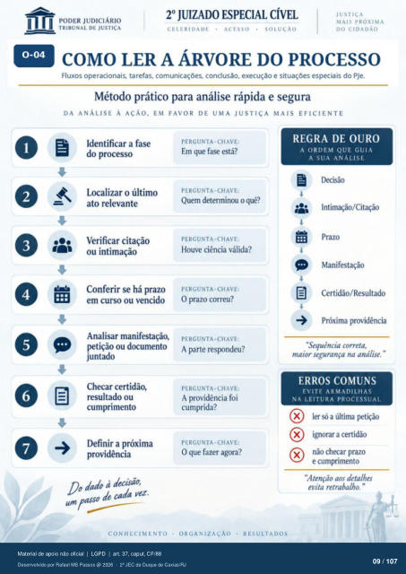

Transcrição automática em português, ainda não revisada. Confira grafia, prazos e termos jurídicos na imagem e no PDF antes de utilizar.
COM0 LER A ÁRVORE DO PROCESSO
Fluxos operacionais. tarefas, comunicações. conclusão, execução e situações especiais do PJe. Método prático para análise rápida e segura
DA ANÁLISE À AÇÃO, EM FAVOR DE UMA JUSTIÇA MAIS EFICIENTE
Identificar a fase do processo
Localizar o último Verificar citação
ou intimação Conferir se há prazo
em curso ou vencido Analisar manifestação,
petição ou documento juntado
Checar certidão, resultado ou
cumprimento Definir a próxima
providência Do dado à decisão,
de cada vez.
CONHECIMENTO
PERGUNTA-CHAVE:
Em que fase está?
PERGUNTA-CHAVE;
Quem determinou o quê?
PERGUNTA-CHAVE:
Houve ciência válida?
PERGUNTA-CHAVE:
O prazo correu?
PERGUNTA-CHAVE:
A parte respondeu?
PERGUNTA-CHAVE:
A providência foi cumprida?
PERGUNTA-CHAVE:
O que fazer agora?
REGRA DE OURO
A ORDEM QUE GUIA
A SUA ANÁLISE
9 I)ecisão
Intimação/Citação Manifestação
Certidão/Resultado Próxima providência
• ORGANIZAÇÃO
RESULTADOS
"Sequência correta, maior segurança na análise. "
ERROS COMUNS
EVITE ARMADILHAS
NA LEITURA PROCESSUAL
X ler só a última X ignorar a certidão
não checar prazo e cumprimento
"Atenção aos detalhes evita retrabalho. "
Ver também o infográfico original (página 9)
